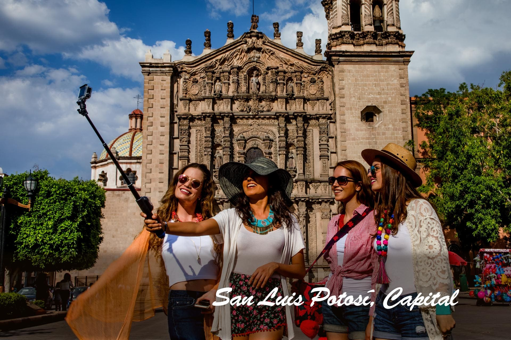

TURISMO DE REUNIONES
Como uno de los segmentos fundamentales del sector turístico, el área de Turismo de Reuniones trabaja en apoyo a congresos, exposiciones, conferencias, etc. en conjunto con la cadena de valor como generador de ingresos, empleo e inversión. Para el municipio de San Luis Potosí es importante posicionar nuestro destino a nivel nacional e internacional.